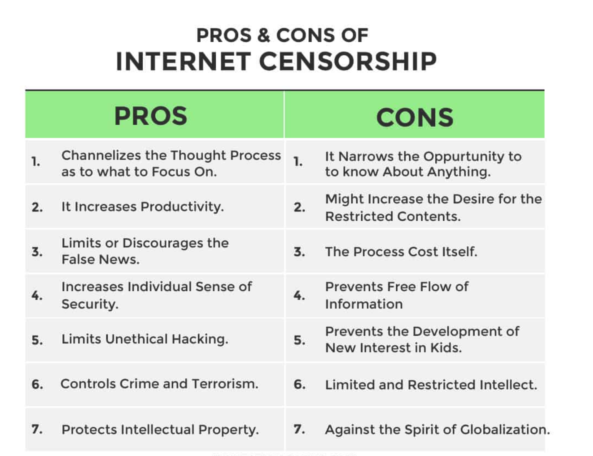
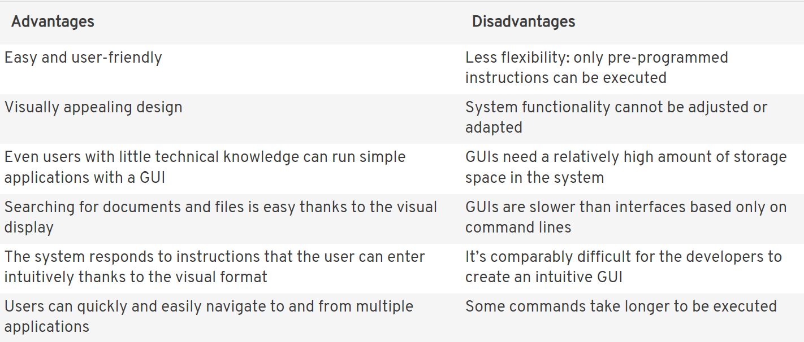

Definition --> The control or suppression of what can be accessed, published, or viewed on the Internet. It may be carried out by governments or by private organizations at the behest of government, regulators, or on their own initiative.
In simple terms, Internet censorship is the practice of prohibiting or suppressing certain online content.
Censorship doesn’t just take place at the government level, with countries like China banning foreign websites under the Great Firewall. It can also happen at home, at work, and with the original source, your Internet Service Provider. However, depending on where it comes from, internet censorship can look any number of ways.There are many advantages and disadvantages regarding Censorship and the Internet. Below is a picture of a table of the pros and cons of Censorship:
The electronic monitoring of human health behaviour using computer techniques has been an active research area for the past few decades. A wide array of different approaches have been investigated using various technologies including Global Positioning System, smart homes etc. The reason for these studies is that there are many issues regarding health of the human too, and how spending too much time on a phone/screen can negatively impact a person.
For example, a mother may need to monitor a child's use of his phone a daily basis, so that he gets enough time for revision and homework too. Settings on the phone such as 'Time Limit' have been implemented over the past few years for not only children, but adults to restrict themselves from spending too much time on their devices/phones.
Businesses may also need to monitor the work rate of their employees. A few examples are:
False Performers : This type of employee would perform their responsibilities only when management is tightly observing. Employee computer monitoring cures the need for micromanagement. Varied reports show whether employees are active and business-oriented during the whole working day or only occasionally when being watched.
Disorganized : Lack of personal organization showed in the form of varied web distractions by employees might be observed via Personal Internet Use Habits reports. The reports disclose the computer time spent unproductively on numerous non-business sites, which attract poorly organized staff.
Employees lacking self-drive : In case a free from performing direct responsibility minute happens, employees, act differently. Some would take an additional coffee break, which is tracked by Idle Time Habits report; whereas others, who appear to possess self-driving motivation, would read business-related material to raise their professionalism. Internet Use Habits report might provide the evidence for additional bonus earned by active and motivated staff.
Personal information or data is information or data that is linked or can be linked to individual persons. Examples include explicitly stated characteristics such as a person‘s date of birth, sexual preference, whereabouts, religion, but also the IP address of your computer or metadata pertaining to these kinds of information. In addition, personal data can also be more implicit in the form of behavioural data, for example from social media, that can be linked to individuals. Personal data can be contrasted with data that is considered sensitive, valuable or important for other reasons, such as secret recipes, financial data, or military intelligence. Data used to secure other information, such as passwords, are not considered here. Although such security measures (passwords) may contribute to privacy, their protection is only instrumental to the protection of other (more private) information, and the quality of such security measures is therefore out of the scope of our considerations here.
Here is a short video on Personal Data Protection
Definition --> The act of illegally copying a computer program, music, a film, etc. and selling it
Piracy has been around since before the age of the internet, however it saw a great increase after the internet was invented and became more mainstream. Through software such as Napster and LimeWire, piracy became a massive issue and many, for example, musical artists attempted to sue these companies. The piece of media which is most often pirated in music, In 2014 it was found that 95% of all online music is downloaded illegally.
Definition --> Offensive communication includes online harassment, cyber-bullying or stalking. The Malicious Communications Act introduced in 1998 makes it a criminal offence to send indecent or offensive messages to anyone online.
Another issue that arose through the creation of the internet is cyber bullying and online harassment. This can lead to many people killing themselves, or at least contribute to this. There are laws which persecute those who do commit online harassment crimes. There is a law called The Malicious Communications Act of 1998. This act can lead those who have harassed to up to 6 months in prison.The practice of copying software is a serious problem in some countries. Copying music, films and software illegally means that there is less money available to pay the writers, developers and artists. Some people argue that the incentive to produce new songs, films, television shows and games disappears as a result of piracy.
Definition --> User interface (UI) design is the process designers use to build interfaces in software or computerized devices, focusing on looks or style.
The GUI is a user interface that enables users to communicate with computers. This typically occurs using a mouse and keyboard, although control by touch and gestures is becoming more and more prevalent. When you move a computer mouse, the cursor displayed on your screen also moves. The signal of the device is sent to the computer, which translates it into a similar motion on the screen. If a user clicks on a certain program symbol in the menu, the corresponding command is issued and the program is launched.Essentially, the GUI is a type of translator that communicates between people and machines. Without GUIs, you would need to control programs and applications by typing instuctions into the command line.
Below is a table of the advantages and disadvantages of a GUI
